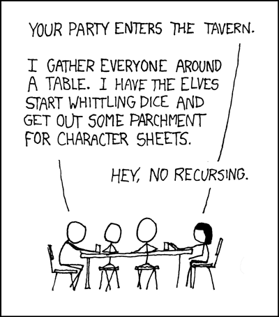

There was something programmy about that movie...
A function that calls itself
So far we have been making functions that proceed linearly, from one step to another, or that fork through the use of if statements.
But what if we had functions that were recursive, folding in on itself?
The classic example of a recursive function is the factorial. You will remember that factorials are often used in calculating probabilities, and that they are written like this:
5! = 5 * 4 * 3 * 2 * 1
There are a couple classic ways of calculating a factorial:
- Use a iterating function, like a loop
- Use a recursive function
Let's look at these separately...
Iteration: solving a factorial with loops
Look at the following code to calculate factorials with loops:
function iterativeFactorial (factorial) { //PROCESS: uses a loop to calculate factorials
var factorialResult = 1; // this is to start off with 1 for multiplication
for ( i=1; i <= factorial; i++) { // loop through each factor
factorialResult = factorialResult * i
}
return factorialResult;
}
Iterative factorial example
Please enter a number of which to calculate the factorial:
Your answer:
Step by step breakdown
| i value | factorialResult |
|---|---|
| i = 1 | 1 * 1 = 1 |
| i = 2 | 2 * 1 = 2 |
| i = 3 | 3 * 2 = 6 |
| i = 4 | 6 * 4 = 24 |
| i = 5 | 24 * 5 = 120 |
Solving factorials with recursion
Let's say that you want to solve for 5!.
You know that 5! = 5 * 4!
And that 4! = 4 * 3!
And that 3! = 3 * 2!
And that 2! = 2 * 1!
And that 1! is defined as 1...
You can recognize a pattern here and see the beginnings of a function.
function recursiveFactorial(factorial) { //PROCESS: calculate factorials recursively
if (factorial == 1) { // 1! = 1. Base condition = stop recursing
return 1
} else { // otherwise recurse down to the next lowest factorial
return factorial * recursiveFactorial(factorial - 1)
}
}
Notice that the function calls itself. This is the essence of recursion.
Example: Critical die rolls
In some game systems, there are recursive die rolls. They work like this: say you roll a die, and you get a 5. Great. You keep the five.
But say you roll a 6. Well, you keep the six, and you roll again, adding the original six to your new roll, and if you roll a six again, then you add 6 + 6 to the new roll, and if you roll a 6 again... ...and so on into infinity
This can be expressed as a recursive function, like this:
function recursiveDieRoll () { //PROCESS: this rolls a die, recursing on a roll of 6
var dieRoll = Math.ceil( Math.random() * 6); // random number from 1-6
if (dieRoll == 6) { // if you roll a six, roll again and add it
return dieRoll + recursiveDieRoll();
} else { // Base condition: do not recurse if you didn't roll a six
return dieRoll
}
}
And it works like this:
Your die roll is:
...and now you get this cartoon:
